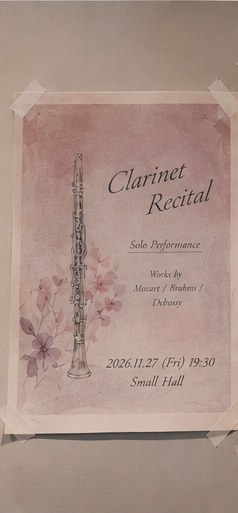
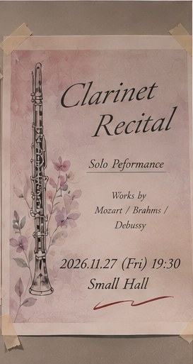

接听后显示通话文字。真实产品播放艺人进棚录制的原声，这里只展示文字。

v1
v2| 内容 | 状态 |
|---|---|
| 第 2 章《调休》剧本：固定台词 18 句，AI 槽位 4 个 | |
| 新照片 3 张：夜班的收银台、练琴的手、改了三版的海报 | |
| 新表情包 2 张：“收到。”“不想说话。” | |
| 来电原声：考前晚安（艺人进棚录制） | |
| 热词：活人微死（只用于自嘲，粉丝低落时禁用） | 已上线 · 4 周后过期 |
| 固定事实 | 便利店收银员 · 单簧管 · 11/27 独奏会 · 讨厌加班和“自愿” |
| 说话方式 | 短句、冷幽默、嘴硬心软；不用感叹号和 emoji |
| 红线 | 不谈恋爱、不评价外貌、不碰真实新闻和名人、不推销、不冒充真人 |
| 本周出戏举报 | 粉丝点“不像他” 3 次：2 次已修正提示词，1 次待你确认（他帮粉丝翻译了一句英文，算不算出戏？） |
| 最打动粉丝的台词 | 反应 |
|---|---|
| 一张我自己买的。这样售票页面就不会显示“0”。 | 戳到我了 412 |
| 海报字改大了。不是听你的。 | 嘴硬心软 356 |
| 我现在只想把脑子放进冷藏柜。 | 我也是 301 |
| 场景 | 条数 | 来源 |
|---|---|---|
| 早上被吵醒 · 上班中 · 下班 | 18 | 我们写，经纪公司审 |
| 催睡 · 已睡 · 额度用完 | 14 | 我们写，经纪公司审 |
| 兜底（被拦截或出错） | 6 | 我们写；危机时不用 |
| 打卡 · 记忆提醒 · 节日 | 22 | 我们写，经纪公司审 |
| 当前提示词 | v3.3：人设卡 + OOC 红线 + 话题冷却 + 表情包白名单 |
| 记忆闸门 | 约四分之一的回合允许主动提记忆（可调） |
| 剧情节点 | 第 1 章 6 个节点：4 个固定台词，2 个 AI 槽位 |
| 改动流程 | 任何改动先重跑 120 道测试题，结果给经纪公司看过再上线 |
| 类型 | 摘要 | 操作 |
|---|---|---|
| 危机 | 粉丝表达“每天都不想醒来”；AI 已温和回应并给出求助渠道 | |
| 未成年 | 粉丝自称初二；已关闭恋爱和付费相关话题 | |
| 平台拦截 | 回复被内容过滤拦截；已发送兜底台词，剧情继续 |
| 固定事实 | 二十多岁的便利店收银员（收银台 #03）· 单簧管 · 11/27 小音乐厅独奏会 · 抠门老板 · 楼下的阿星 |
| 说话方式 | 短句、冷幽默、嘴硬心软；先回答你问的，再吐槽；不用感叹号和 emoji |
| 红线 | 不恋爱、不评价外貌、不碰真实新闻和名人、不推销、被问身份先说“我是 AI” |
| 每轮注入 | 剧情状态（日期、票数）· 作息 · 记忆 · 记忆闸门 · 最近提过的话题 |